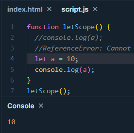

1. Discuss the scope of var, let, and const
var, let and const are different ways to declare variables in JS. Among them var is more primitive and it is
function scoped. Whereas, let and const were added to JS in the version ES6. These two are block Scoped.
var : Before let and const, var was the only way to declare function. It is
function scoped. Meaning it is accessible within the entire function that it was declared in. It is also
hoisted. Meaning it can be accessed inside any scope of the function regardless of scope being before or
after the declaration line. However, assigned value will be available after the assignment is completed.
var example:
let and const : let and const both were introduced in ES6. both of them are
block scoped. Meaning they are only available in the block they were declared in (e.g. if-block, for-block).
the difference between let and const is that const is not re-assignable, whilst let can be re-assigned. they
are also not hoisted.
let example:
const example: